XMagPy
Version 2.0.0
Authors: Leonhardt, R. et al
Table of Contents
- Introduction
- Installation
- Main window and its menu bar
- Layout and default configuration
- Reading and exporting data sets
- Database
- DI
- Memory
- Special
- Options
- Help
- Panels
- The data panel
- The flag panel
- The meta panel
- The analysis panel
- The DI panel
- The report panel
- The monitor panel
- Application recipies for geomagnetic observatory data analysis
- Additional applications
- Appendix
1. Introduction
The analysis of geomagnetic data is a primary responsibility of approximately two hundred observatories around the globe. All procedures, from data quality control to final data submission, increasingly require more sophisticated and effective tools, especially when it comes to high resolution records. MagPy, short for Geomagnetic Python, is a platform-independent, multi-purpose software package to assist with geomagnetic data acquisition, storage, distribution and practically all analysis procedures used in geomagnetic observatories. It supports all common data formats used in the geomagnetic community, which include both instrument-specific and general purpose types such as IAGA02, WDC, IMF, IAF, and ImagCDF. Direct access to data stored in online sources using URLs is also supported, allowing the user to obtain data directly from the dedicated World Data Centers. Routines for common analysis procedures covering quality control, filtering, data series merging, baseline adoption, format conversion, and data submission are provided. Data handling functions from basic import, treatment, and export up to complex automated real-time analysis of geomagnetic data can also be easily implemented. MagPy can communicate with a MySQL database, which further facilitates effective archiving of data and all necessary meta information. MagPy is an open source project hosted on GitHub (https://github.com/geomagpy/magpy) and is available on PyPi (https://pypi.python.org/pypi/geomagpy).
The graphical user interface XMagPy provides easy access to most routines offered by the underlying MagPy python package, which will hereinafter be referred to as the MagPy back-end. Version numbers of graphical user interface XMagPy and the back-end are identical. Before starting with XMagPy and using its functionality it is highly recommended to read the basic MagPy manual to be found here.
In the following we will focus solely on the front-end, the graphical user interface. For better readability we are using a number of conventions. Any reference to menu items, submenus, panels and buttons are printed in bold face. Code fragments are contained in separate boxes. Example files are part of the MagPy package. They can also be downloaded directly from the github directory given above in folder magpy/examples/.
2. Installation
2.1 Linux installation
Linux installations should be performed within a dedicated python environment:
It is strongly recommended the use one of the following two options. The examples have been successfully tested on Ubuntu 20.04, Ubuntu 22.04, Ubuntu 24.04 but should work in other architectures as well.
The graphical user interface relies on GTK >= 3. So you will need to install
user$ sudo apt install python3-wxgtk4.0 libsdl2-dev
2.1.1 Option 1: Using a basic python virtual environment
For using virtual environments based on system python of your machine you will need to install "virtualenv". On a Debian/Ubuntu type machine you can do the following.
user$ sudo apt install python3-virtualenv
- open a terminal
-
from the user$ prompt, create a new virtual environment called magpy
user$ virtualenv ~/env/magpy -
activate the new environment
user$ source ~/env/magpy/bin/activate -
check your current python version
(magpy)user$ python -V -
download the wxPython wheel fitting to your system and python version from https://extras.wxpython.org/wxPython4/extras/linux/gtk3/ and install it
(magpy)user$ pip install ~/Downloads/wxPython...whl -
then install magpy
(magpy)user$ pip install geomagpy -
finally you can run xmgapy
(magpy)user$ xmagpy
This technique is working on Ubuntu24.04 with a python 3.12 environment and wxPython4.2.2. The benefit of this option are newest python and wx packages as well as the fact that no additional large python package needs to be installed. Besides you can use this environment for backend scripts. The benefit of the following option 2 is that it is rather easy and, at least to my experience, works flawless on most operating systems.
2.1.2 Option 2: Using a conda/anaconda environment
- install anaconda according to its recommendations
- open a terminal which should show a prompt starting with (base). If this is not the case, activate anaconda by typing "conda activate"
-
from the (base)user$ prompt, create a new conda environment called magpy which supports wxpython
(base)user$ conda create -n magpy wxpython matplotlib numpy scipy -
this technique will create a pythion 3.7 environment using wxpython4.0.7.
-
activate the new environment and install geomagpy
(base)user$ conda activate magpy (magpy)user$ pip install geomagpy -
from the (magpy) environment you can now start xmagpy.
(magpy)user$ xmagpy -
if you want to create symbol links please refer to the appendix
2.2 MacOS installation
Please follow the instructions for Linux. I tested "option 2" using Anaconda, which was working fine with MacOS. I am not a MacOS expert, so if you can extend this instruction please do so.
2.3 Windows installation
- get the [MagPy Windows installer] here (under Downloads): https://cobs.geosphere.at
- download and execute magpy-2.x.x.exe
-
all required packages are included in the installer
-
MagPy will have a sub-folder in the Start menu. Here you will find three items:
* command -> opens a DOS shell within the Python environment e.g. for updates * python -> opens a python shell ready for MagPy * xmagpy -> opens the MagPy graphical user interface -
to update an existing XMagPy2 installation right-click on subfolder "command" in the start menu
- depending on user/all installation eventually select "run as administrator"
- issue the following command "pip install geomagpy=2.x.x.". Replace 2.x.x with the newest version
3. Main window and its menu bar
3.1 Layout and default configuration
The graphical user interface of MagPy is based on WXPython.
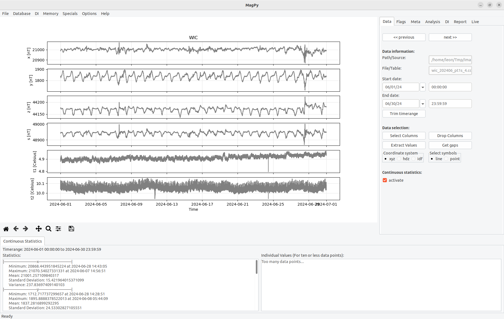
Figure 3.1: The graphical user interface of XMagPy consists of 4 standard sections and 1 optional part.
The main program window is separated in several parts as shown in Figure 3. Figure 3.1a contains the main menu for data access and memory/multiple data operations. Within the main menu you will find drop down lists for file operations, database issues, DI analysis, memory operations, some extra stuff, options and the help menu. The main menu bar will be discussed in this section. The panels (Figure 3.1b) provide access to individual methods for data analysis, interpretation and manipulation of active data sets. An individual section is devoted to each panel in chapter 4. Timeseries plots are displayed within the plotting area (Figure 3.1c). Options for modifying the plots appearance are discussed in section 3.7. Status information (Figure 3.1d) and current working states are found at the bottom of the window. An optional statistics view (Figure 3.1e) can be activated within the Analysis Panel (see section 4.1).
3.2 Reading and exporting data sets
MagPy supports a large variety of different data sources and formats, which are typically used within the geomagnetic community. When looking at the file menu, you see direct support for the following sources: file(s), webservices, remote data sources and database. Databases such as MySQL and MariaDB are also supported. In order to access existing data go to menu File in the main menu bar.
3.2.1 Loading single or multiple files
Most users will access data files on a local or connected file system. To do this use Open File in the File menu. This will open a standard file selection menu for your operating system. Locate the file you want to open. In most cases no further selections are necessary. In case of an IMAGCDF file which contains different time columns a pop-up dialog will ask you which time column related data set should be loaded. If the format type is supported, MagPy will identify it and open the data. Multiple selections are possible. Currently supported file formats can be found in menu Help, Read Formats....
3.2.2 Accessing Webservices
Using Open Webservice in the File menu will gives you access to machine readable webservices of institutions and organizations. Currently (01/2024) webservices of INTERMAGNET, the [USGS] and GeoSphere Austria are included for accessing geomagnetic variation data and also a few other data sources. Please check the corresponding data licenses of the data suppliers before using it. Open Webservice will open a selection dialog as displayed in figure 3.2.1
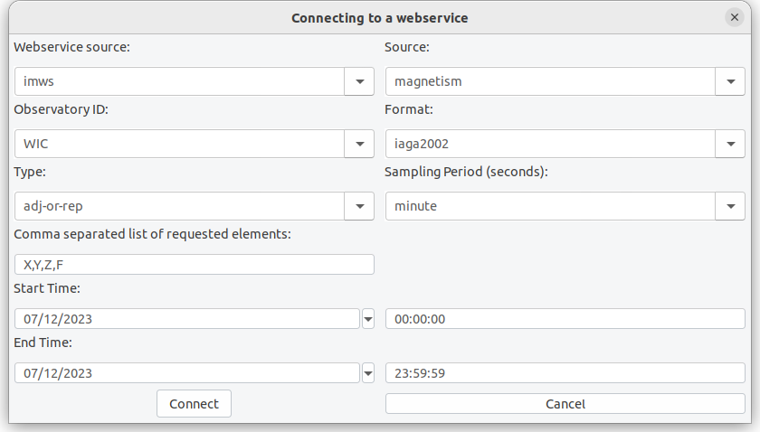
Figure 3.2.1: Webservice selection window. The data request url will be constructed from the given parameters.
In future versions this list can be extended to other webservices as well.
3.2.2 Accessing general URLs
It is possible to open supported web based data from basically any web address. When suing Open URL you can enter basically every web address and access available data products directly. A number of examples for various data sources are listed in section 3 of the main MagPy manual. Pre-installed with XMagPy are a few examples for the Kp webservice of the [GFZ Potsdam], data access at the [WDC] and some satellite data from [ACE]. As shown in figure 3.2.2 you can change/modify bookmarks and add your favorite quick access list here.
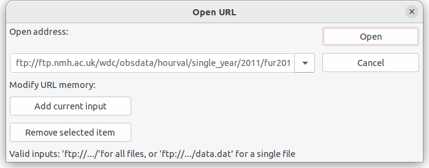
Figure 3.2.2: Input window for remote connections. The example accesses hourly wdc data from the world data center in Edinburgh via FTP.
3.2.3 Database access
If a MagPy based MySQL/MariaDB database is connected you can also access and data sources directly from the database. Please check the main MagPy manual and section 3.3 for details on how to setup such a database. Using a data base comes with a number of benefits regarding data organization, quick access, flagging and meta information storage. When clicking on Open database a drop down combo box will give you access to data tables contained within the database. When opening you will further be asked to define a time range.
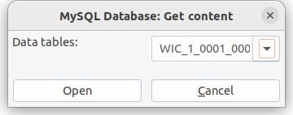
Figure 3.2.3: Database table access.
3.2.4 Exporting data
You can save data by using the Export data method of the file menu. A selection window as shown in Figure 3.2.4 is showing up.
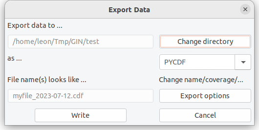
Figure 3.2.4: Export data window.
Within the export data window you can select the destination path. In dependency of the selected format, eventual file name prerequisites are constructed. Please note, that some file formats require specific meta information. Please refer to the official format descriptions i.e. at INTERMAGET. A number of file formats also allow for a more complex storage protocol. Please use the button Export Option within the Export Data dialog to view these additional options. Please note that several data formats have specific options to be selected here.
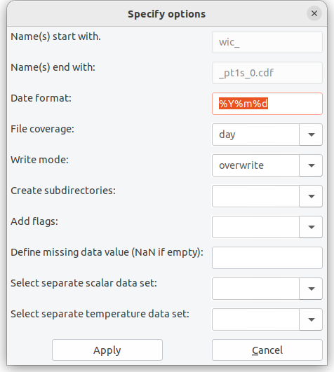
Figure 3.2.4: Export data window.
Assuming a data set in one second resolution which you want to export to IMAGCDF you will have several additional options, to define output content. First of all correct IMAGCDF outputs require specific meta information before exporting which you can add to your data set as shown in section 4.3. When you then export your data set and use the Export options button, the selection menu will look like as shown in Figure 3.2.5. For IMAGCDF the file name is predefined. Possible general options are coverage, write mode and create subdirectories. If choosing the create subdirectories option, the data set will be stored in specified subdirectories consisting either of year (Y), year and a further subdirectory month (Ym) or year and a daily subdirectory with day-of-the-year number (Yj). In case of IMAGCDF, you can add flagging information into the data set, which is experimental and not yet officially approved by INTERMAGNET. You can also define the missing value parameter. In IMAGCDF you can additionally add data sets with for example different sampling rates for scalar and/or environmental data. These data sets need to have been opened before. Then you can select the corresponding data sets ID (see 3.5) to be added.
Please note that not all export formats make sense depending on your data type. Here it is assumed that the user knows about benefits and drawbacks of specific well known geomagnetic data formats. In case you do not know yet which format to choose I strongly recommend one of MagPy's internal format as they will contain all meta information and data contents so that you do not loose and information unintentionally. There are three MagPy specific output formats which can be used for archiving and storage. PYCDF is based on the Common Data Format, specifically NasaCDF, and can hold basically any meta information you define. It is specifically designed to save flagging information and adopted baselines along with raw data, to allow for a single file storage (and thus reconstruction) of all analysis steps typically used in geomagnetic data analysis. PYSTR is a comma separated ascii text file which supports all basic meta information. PYASCII is a semi-colon separated ASCIItext file which only contains data and will drop most of the meta information.
3.2.5 Quit
Does what is says... will quit XMagPy.
3.3 Database
For connecting a MagPy database you use Connect MySQL DB from menu Database. This will open a dialog window to define host, name and credentials for the MySQL/MariaDB database. Please note that this usage requires a existing and accessible MagPy database.
If you want to create a new MagPy database you can follow the steps below to establish one. Please note that these instructions are valid for a Linux system and might be modified for other systems.
-
Install and configure MariaDB or MySQL if not already existing (please refer to related instructions). Then run MySQL
$ sudo mysql -u root -p mysql
-
Create a new empty database (in this example called mydb, please change).
mysql> CREATE database mydb;
-
Create a new user and give him permission on this database
mysql> GRANT ALL PRIVILEGES ON mydb.* to
myuser@%IDENTIFIED BYmypasswd; mysql> FLUSH PRIVILEGES; -
Initialize this database with a MagPy supported table structure. Go to menu Database and run Initialize new database
You can now connect to this database and use it. Simply test it by storing flagging information or meta information into the database.
3.4 DI
The DI data menu item allows for opening the DI input sheet. This option will open a dialog window which corresponds to a typical DI measurement input sheet as it it used for example in Niemegk, Conrad, and many other observatories (figure 3.4.1). If you have loaded DI data already into the memory (see section 4.5) you will find a drop down list on the upper left, which gives you access to this data.
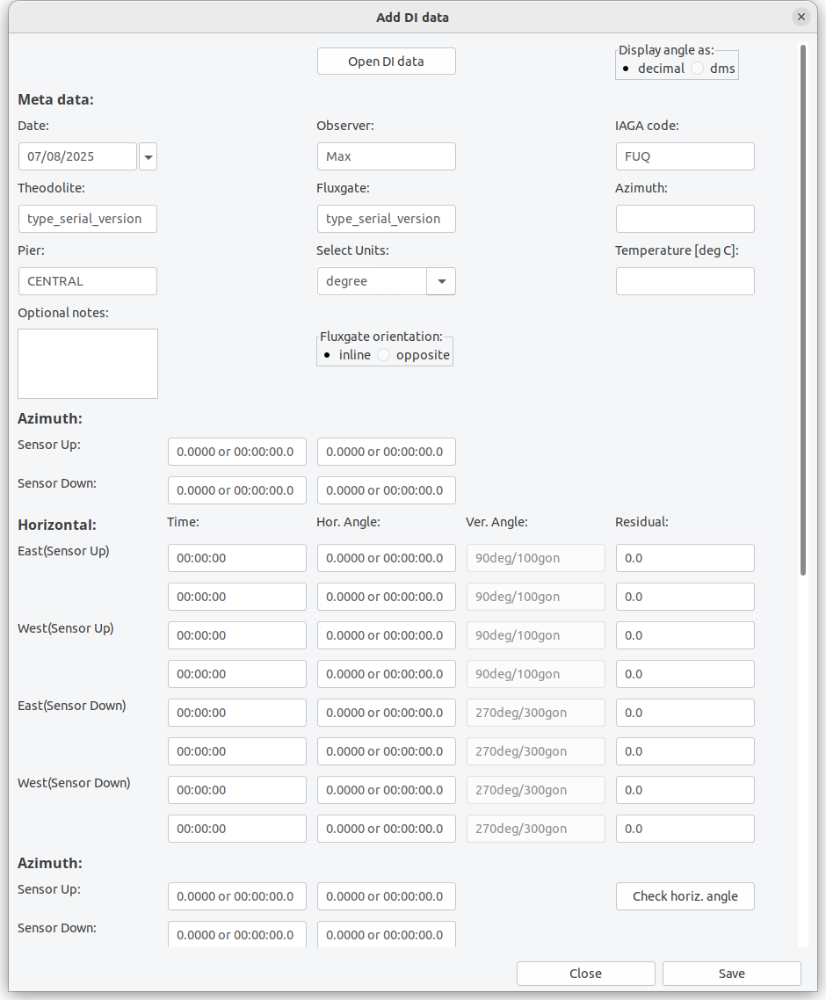
Figure 3.4.1: The Input sheet for DI data.
The input sheet allows you to load already existing data or to fill-in any new measurement data and store it. If it is used for data input it is recommended to create a template file with recurring meta information and load the template first. At present you can save the data sheets to local files only. Saving will create an ASCII text file with complete information (see appendix). The input sheet can also be modified in order to reflect different measurement orders, amount of individual measurements and usage of scale value tests. If you are not using the residual method, just leave 0 as input value there. The input sheet is modified within the general options menu as described in section 3.7. At the moment a maximum of two repeated measurements for each position are possible. We are aware of the request of some observatories to extend this amount. This requires a lot of coding and is therefore postponed to a future major version. Changed DI options are connected to the observatory code (Station ID).
The fields of the input sheet should be widely self-explaining for anybody experienced in DI measurements. As mentioned already, the input sheet supports residual and zero measurements. If you are using residual measurements it is necessary to consider the orientation of the fluxgate probe on the theodolite i.e. whether it is inline or opposite to the optical direction. If you are performing F measurements at the same pier prior to or after the DI measurement you can type them in as well. Alternatively you can upload any supported F data file e.g. of a GSM19 system. You can load example6a.txt or example6b.txt into the input sheet to get an impression on how to fill in parameters.
When saving DI data to a file, the file name will automatically be generated from date and time of the first measurement, from the name of the pier and the station code. The file is an ASCII text file. If an identical file name is already existing you can either overwrite it or save the data as “alternative”. This second option will add one-second to the time in the file name (not to the data itself). Such alternative data might be used, if you have measured two different azimuth marks. Type in all data for the primary azimuth mark, save it, change the azimuth values to the second mark and save again as alternative.
3.5 Memory
The main menu item Memory provides access to previously opened/modified data sets and allows for some multiple data operations when selecting Access data memory. The dialog as shown in figure 3.5.1 will give you access to all data sets and working states in the memory. They are characterized by a unique ID which is constructed from data characteristics. Shown data columns (keys) can be modified. On the right side you will see a number of operations:
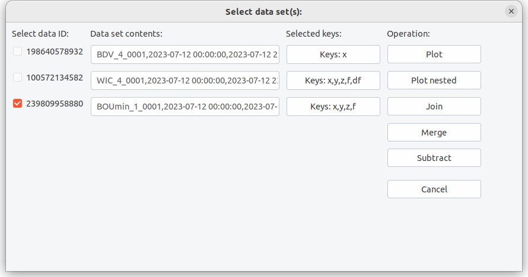
Figure 3.5.1: Memory operations.
Plot will activate and show the selected plot. If multiple plots are selected all of them will be shown above each other as long as similar time ranges are available. Selecting multiple plots will disable all analysis functions.
Plot nested will show similar data sets (similar timerange, similar keys) within a single plot.
Merge will add data from a secondary source into a primary source. If some data is already existing this will remain untouched and only gaps will be filled by the merged secondary source. Typical place holders as used in IAGA files (99999, 88888) will be treated as non-existing data. The time series will always be limited to the time range of the primary source. You can only merge two data sets at once.
Subtract will subtract identical columns from two data sets. You can only subtract two data sets at once.
Combine will join two time series and fill non-existing columns. If data is already existing, they remain untouched.
You can reset the current memory, keeping only the currently active data set by going to main menu item Memory and selecting Clear memory.
3.6 Specials
XMagPy comes with a module to check the validity of definitive data in comparison to INTERMAGENT standards. Although
these methods can also be used by official data checkers, the main purpose however is to provide an easy testing
environment for all users to check their data sets before submitting them to INTERMAGNET. For non-INTERMAGNET
observatories, the testing routines are helpful for data consistency checks and provide the possibility to identify
critical deviation values relative to the IM standard.
Please note, successfully passing the definitive check routines does not automatically indicate, that your data is
acceptable for IM. Further tests and final decision is always the duty of an official data checker. Using MagPy’s
definitive data check, however, will dramatically reduce the work load of the voluntary IM data checkers, as most
typically occurring problems are tested, and therefore, all sides will benefit.
To access the data checking routine go to Main menu, Specials and click on Check definitive data.
This will open a basic input dialog. You can choose source data to be checked and some options. You can provide data in minute resolution and data in second resolution. Acceptable data sources for one-minute data are IAF or IAGA-2002 collections for one-minute and IMAGCDF or IAGA-2002 archives for one-second data. If both data sets are provided please make sure that they are from the same year. As source you define a directory which contains the INTERMAGNET requested data structure for definitive data submission. If you just want to test either minute or second data, please leave the other source field empty. Two check types are possible, quick and full. For the quick test a single, randomly selected month will be tested. For full analysis, the validity tests will be performed for all months of one year. You can also specify check options. By default all possible tests as shown below will be run. Unlike in XmagPy1.x , all checks will now performed without any further interaction and a final report will be presented. The final report window will automatically pop up when finished, giving you a summary of the check results. The color and rating helps to guide your eye and eventually indicate points which need your attention. Orange or red colors do not necessarily indicate that the data is not ready for IM submission.
The report window will contain some details on each performed check. It will also contain explanations if problems occurred. Warnings (orange) and errors (red) are found at the top of the report window. You can save the summary to a markdown file. In summary the following checks are performed at each step:
-
Step 1: Test whether selected directories are existing and they contain expected data files (amount and types) for definitive data submission
-
Step 2: For each month (or the randomly selected one in case of quick) the data sets from the selected source will be opened. The data is tested for consitency and completeness
-
Step 3: Now the basevalue (BLV) file will be opened and also shown in the plotting area. The adopted baseline will also be checked. The quality analysis starts with an average periodicity, i.e. how often have measurements been performed. If several measurements are performed each day, then the average intra-day deviation of measurements is analyzed. Afterwards the residuals between adopted baseline and basevalues are calculated. Finally the amplitude of the adopted baseline is determined. If any of these parameters exceeds 5 nT than a warning message is issued. The report contains all numerical values. When accessing the BLV plot later, you can also select the delta F component there, providing information on the F baseline.
-
Step 4: Meta information and header content from all provided data sets is now checked. Besides the data files (IAF, IAGA, ImagCDF) also the BLV and yearly mean files are investigated. All header information will be listed in the report. If differences of identically expected information is found, then a special notification will be created. Some notifications are uncritical as e.g. IAF only contains abbreviations of institute names whereas other format contain the full name. Sometime you might run into problems with this test, as MagPy tries to open and interpret a yearly mean file which actually is free form. You can test that before by just opening the yearmean file alone. You might want to disable step 6 if you have problems.
-
Step 5: An overview about k values as contained in the IAF data file is shown.
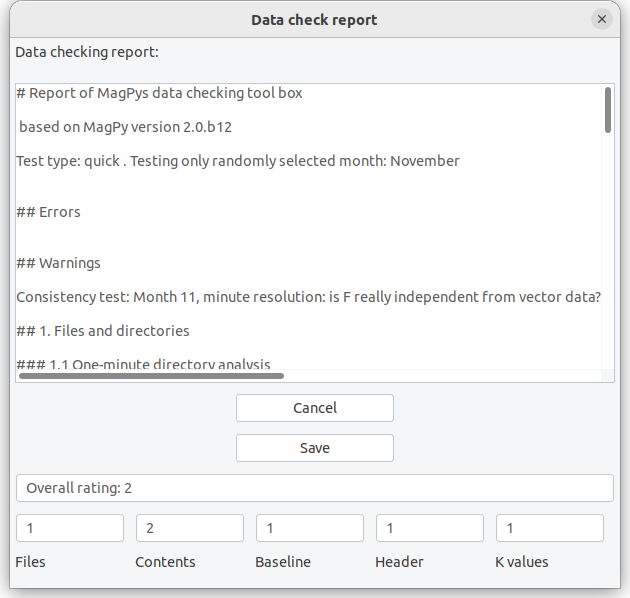
Figure 3.6.1: Definitive data checking results.
3.7 Options
The Options menu provides access to three submenus for basic initialization parameters, plot options and global DI analysis parameters. Within basic options initialization parameters you can specify the default observatory code, default paths for loading and saving data as well as default parameters for fitting.
[!NOTE] The default observatory code is also changed when opening/analyzing DI data related to another observatory.
The special parameters Apply baseline affects the way how baseline corrections are performed. By default XMagPy will not apply conduct a baseline correction after its calculation but just store the correction function in the data sets header. The user has to actively apply this correction as described in section 4.4 Baseline. You can however skip this step and apply the baseline correction directly. By default MagPy is applying baseline corrections only on vectorial data. If you want to adopt a baseline also for scalar F data, then activate F adoption. Provided that you fitted df values of baseline data and F data is available and shown along with your vectorial data, then F adoption will be performed. Depending on its development stage, XMagPy might contain some hidden experimental methods which can be activated here as well. Please use these experimental methods with care as they are under current development, might not work correctly yet and might even break current analyses.
The plot options menu allows you to modify the appearance of the data plots. Changes will be applied to the currently active plot and stored along with its ID in the memory. The plot options menu is directly using optional inputs for the plotting function as defined in the general manual, summarized in section 4. This requires the provision of values, lists and dictionaries in a very stringent format. There will be a number of examples provided in section 5 of this manual.
The DI initialization parameter option is useful, if you want to use MagPy‘s DI input sheets (figure 3.4.1), as you can change the layout here. The text-edit provides the order of measurements as shown in the input sheet: MU (mire up), MD (mire down), EU (east up), WD (west up)… provide the current order. You can modify that for example by simply changing …, EU, WU, ... to …, WU, EU, …. Please leave the rest unchanged. If you are not using repeated measurements for each position, disable the repeated positions check-mark. If you are not using a residual method or do not use scale value checks then disable scale value. MagPy is supporting different parameters in dependency of the observatory code. If you want to add an additional observatory firstly open the basic parameter dialog from Options. Insert a new default observatory code there and save it. Then open the DI parameter dialog. The new station code is automatically selected. Change the desired parameters and save.
3.8 Help
General information about XMagPy and currently supported file formats for reading and writing can be found here.
4. Panels
4.1 The data panel
An overview about the data panel is shown in figure 4.1.1. On top of the data panel you will find two quick access buttons, Previous and Next. When opening data files with dates in the filename, assuming multiple adjacent files in the same directory, database sources or webservice/url data with time ranges, then these buttons will be activated and you can quickly switch to the next or previous data with a similar coverage. At the moment this quick access buttons are available if dates are characterized by numerical values. Thus, for some data files like geomagnetic IAF data these options are NOT available.
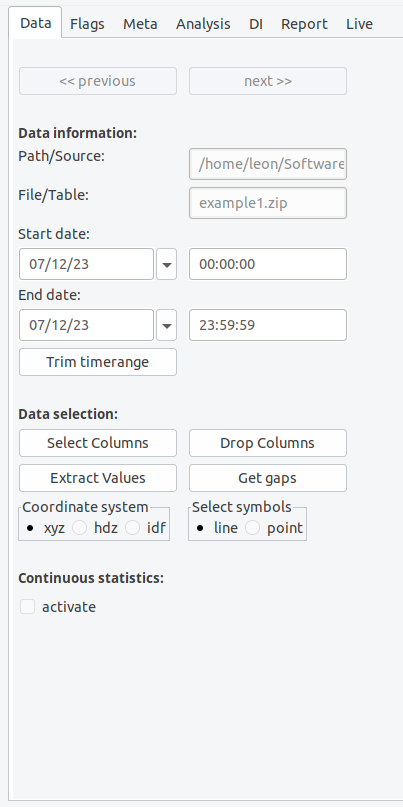
Figure 4.1.1: The data panel..
The source of the opened time series and its covered time range is shown below the quick access buttons within the Data information field. You can modify start and end time by changing times or dates subsequently using the trim button. Please note: the trim button will cut down the original data set and create an new input in the memory.
The field Data selection allows you to select specific key for displaying in the diagram (button Select keys). You can also modify the data set but deleting unused keys using Drop keys, which will lead to an new memory input. Extract values gives you the possibility to remove larger or smaller values than a given threshold. Multiple criteria are possible. By default such data, including time stamp, is removed. If you want to keep timestamps and use missing data place holders (np.nan by default) use the Get Gaps method afterwards, which will also then lead to a discontinuous line plot. You might want to change the coordinate system between cartesian, cylindrical and spherical coordinates if vector data is provided. Select a line or point plot. More options are available using Plotting options in the Options menu.
Finally, you can activate the Continuous statistics panel below the main frame.
4.2 The flag panel
The flag panel contains methods for flagging data, as well as possibilities to store and load such information. Please note that flags are always connected to a specific SensorID which is related to and obtained from the data source. Every flag is defined by a number of parameters of which the flagtype defines whether data has to be removed for definitive analysis or not. A label and its labelid provide information about the flag reason. Observers can comment the flag and the actual operator who added the flag should be provided. In case of automatic flags the operator is named "MagPy". Further details are found in the general manual. The main flagging functions are accessible by buttons: Flag outlier will scan the time series for outliers (4.2.0). Flag selection will mark currently selected data enlarged by zoom. To use this method you zoom into a specific plot area (see 3.3) and then press the Flag selection button. This is the most common method for regular data flagging. Flag range allows for defining either a value or a time range to be flagged. If you just want to flag maxima or minima within the time series, you firstly select the component(s), label and flag ID, and then use the Flag maximum or Flag minimum button. Flags can either be saved within a connected data base (which I would recommend) or into a data file. Flags are visualized by colored patches. Flag types to be removed for definitive data are colored in red, light red for automatic flags and dark red for observer decisions. Green colors indicate flags to be kept.
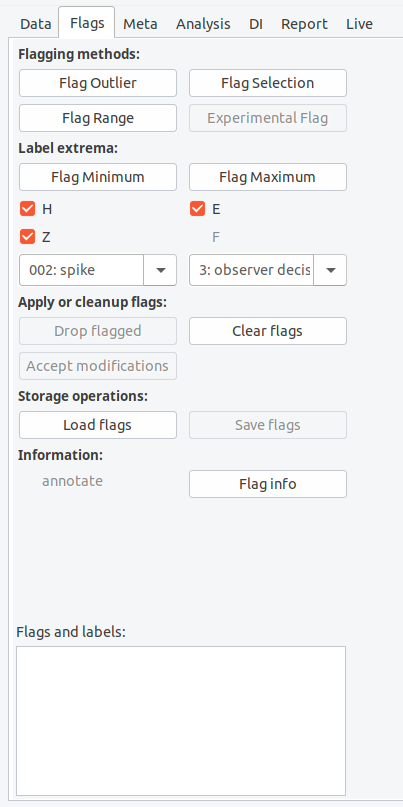
Figure 4.2.0: The flagging panel.
Mouse operations assist the flagging methods. If you move the mouse over a flag patch, the associated information is displayed in the lower text window of the flag panel. A right click with the mouse will remove the flag. If you press the middle mouse button a window will open allowing you to redefine flagging information. Modified or dropped flags will actually not be removed by XMagPy. Dropped flags will still be kept in the memory associated with a "delete" validity parameter. Modified flags will be kept with a "hide" validity parameter. When saving, these data sets will be stored with their currently applied validity parameter. At the moment the Accept button will not change this behavior.
The flag file supports two formats, pickle, a binary structure, or json, an ASCII structure, of which I recommend the latter. Drop flagged will remove flagged data with a 'remove data' flagtype and replace them by NaN. Please note, the flag patches will still be shown in the diagram, so that you can easily locate already removed data sequences. Clear flags deletes all current flagging information, keeping all data unchanged.
4.2.1 Flag outlier
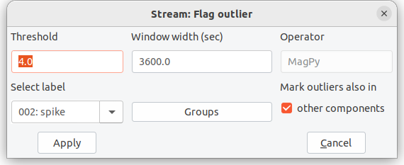
Figure 4.2.1: Flag outlier selection menu
The Flag outlier method makes use of interquartile ranges (IQR) to identify how spread-out values are within a certain time window, moving along the time series. Data outside the IQR range multiplied by a certain multiplier, also referred to as threshold value, are identified as outliers. In statistics usually a multiplier of 1.5 is assumed. I recommend larger values here. You can change time range and multipliers in a selection window when applying this method (Figure 4.2.1). Thresholds of 4 and window lengths of 30 to 60 seconds are typically good to identify lightning strikes in one-second data. Thresholds of 5 and window lengths > 300 seconds are good enough to identify spikes and keep most natural signals in. By default a time window of 600 times the sampling rate is assumed. If marking outliers in all components is chosen then every outlier detected in a single component is also marked in other components as well. This is particularly useful for vectorial data. Outlier flags are „automatic flags“ and will be assigned to the operator "MagPy". The flag comment will contain threshold (muliplier) and time window length.
4.2.2 Flag selection
In the Flag selection menu you can define the components (keys) to which this flag has to be applied. You can further select a general flag type, characterized by an ID. This type can be either
ID 0, normal data: just add a comment to the selected data ID 1, automatic flag - remove: should only be used by automatic processes like outlier detection ID 2, automatic flag - keep data: data to be kept for definitive data production ID 3, observers flag - remove data: don‘t use this data for definitive data production ID 4, observers flag - keep: keep it
Flagtype 3 and 4 cannot be overwritten by automatic processes 1 and 2. The provided comment is free-form text, but don‘t use special characters here.
4.2.3 Flag range
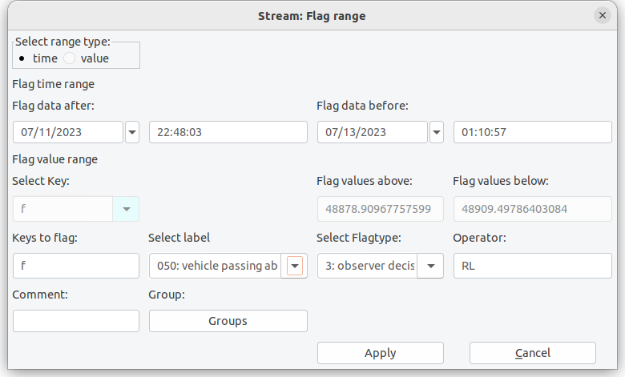
Figure 4.2.3: Flag range menu allows you to flag data between given boundaries either in time or amplitude.
The Flag range method allows you to select specific boundary values. Data exceeding these boundaries are flagged. Initially you have to choose between amplitude (value) or time range. When selecting value, you provide the component/key and threshold values. If a time range is to be flagged, as shown in figure 4.2.3, you will have to provide lower and upper date and time. If you zoomed into a graph, these values are prefilled by the boundaries of the zooming window. For both selections you have to provide label, operator, comments, flagtype, and components/keys to be flagged as described in section 4.2.3.
4.2.4 Flagging extrema
For flagging either maximum or minimum values in specific diagrams you firstly need to select the component(s) which you want to flag. Before actually pressing the flag button you also should select the flag ID which should be connected to your extrema flag. Default is a “removal” flag. All field found on the main panel as indicated by “Mark extrema” in figure 4.2.0.
4.2.5 Annotation and flagging info
The flags button on the analysis panel will open a flag statistics dialog (figure 4.2.5).
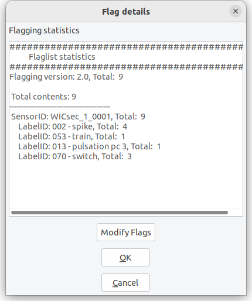
Figure 4.2.5: The flag dialog opened in the analysis panel. You can modify multiple flags.
The flag dialog will provide some basic information on the flags currently stored in the sensor related flagging object. As shown in the example (flagging_example.json applied to example1) , 252 individual flags are currently included. The flags have all been created by automatic outlier detection (aof = automatic outlier flag), which is also expressed by the yellow flag annotation color. 252 flags were created using the outlier detection parameters as given in the comment. Within this dialog it is also possible to modify the flagging information.
4.3 The meta panel
The meta data panel gives you an overview about all meta information connected to the currently active data set. This meta information is usually obtained from the data file. If a database is connected, and you have information for DataID, SensorID and/or StationID within your database, you can extend that information with database contents (Get from DB). This is useful for exporting data e.g. when converting IAGA-2002 to ImagCDF. The buttons Get from DB and Write to DB are only available if a DataID is provided for the data set.
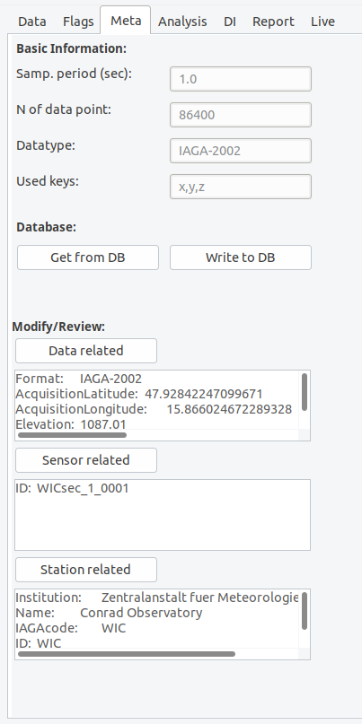
Figure 4.3.0: The meta panel.
You can always modify or extend meta information when clicking on the buttons for data related, sensor related or station related meta information.
As an example the input sheet for station related information is shown in figure 4.3.1. Here you will see several fields which can be filled with your information. The field names are self explaining and will be automatically converted to obligatory field names when exporting specific formats like IMAGCDF. Numbers in parenthesis behind some field names indicate that this information has to be provided for the corresponding output (1 → INTERMAGNET Archive Format IAF, 2 → IAGA 2002 format, 3→ ImagCDF).
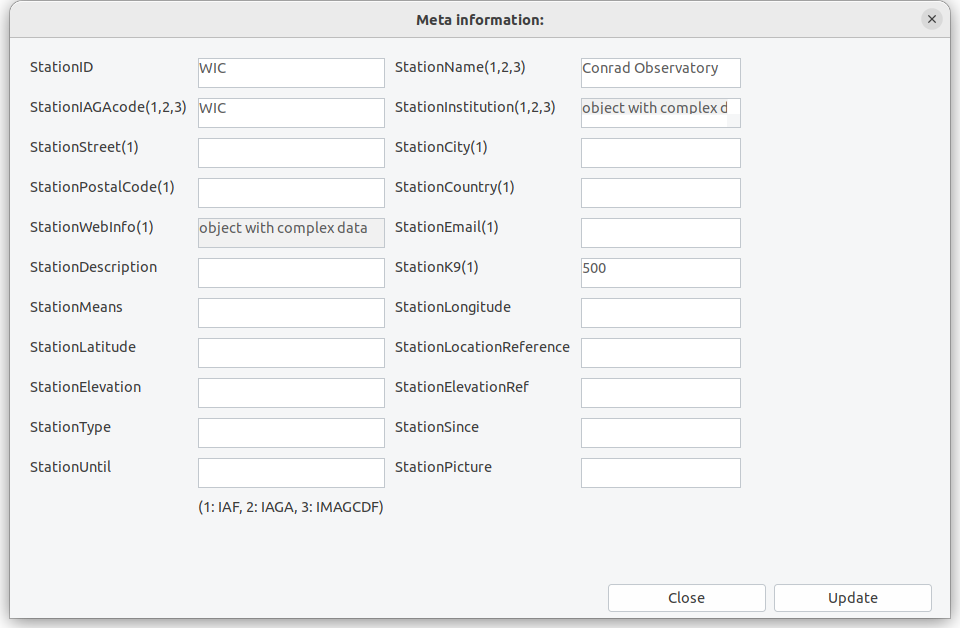
Figure 4.3.1: Input sheet for station related information.
Please use the button Write to DB only if you are absolutely sure that you know what you are doing. Write to DB will replace any existing data from the database with key:value pairs you provided. This means that also empty fields are written to the database and will replace any existing data.
[!IMPORTANT] It is strongly recommended to perform write operations to the database not from XMagPy but use backend methods.
4.4 The analysis panel
The analysis panel provides access to many methods which are useful for data checking and evaluation. In the following you will find subsections for buttons and underlying methods on the analysis panel.
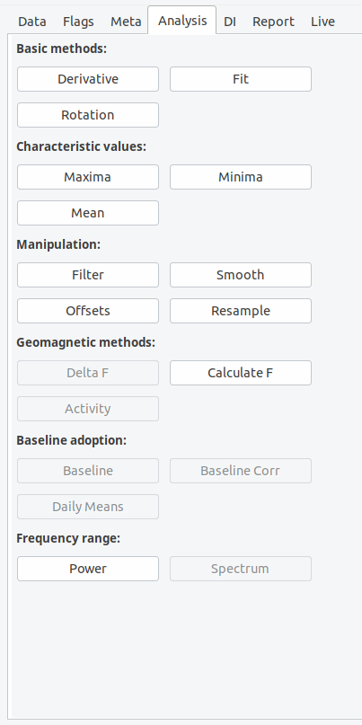
Figure 4.4.0: The analysis panel.
Derivative will calculate the derivative of all data columns diagrams shown in the plot. If you want the second derivative, just press the button again. The derivative method is helpful to identify strong gradients within the components, which can be related to spikes, SSC-sudden storm commencements and other artificial or natural reasons.
Rotation: When using the rotation button a window will open asking you for rotation angles alpha, beta, gamma. The rotation function will use an Eigen rotation to rotate the vector (x,y,z) into a new coordinate system (u,v,w). Alpha corresponds to a rotation in the horizontal plane, beta will rotate in the vertical plane. When only using alpha, a „horizontal“ rotation within the x-y plane is accomplished.
The Fit method will open an input dialog as shown in figure 4.4.1. The dialog window will ask you to define a fit function, its parameters as well as a time range. When choosing spline as fit function, you are asked to provide a relative measure of knotsteps for the spline. The provided number defines the position of knotsteps, relative to a signal length of 1. 0.33 thus means that two knots at 33% and 66% of the time series are used. Lower numbers increase the amount of knots. When choosing polynomial fits, the polynomial order needs to be provided. The higher the polynomial order the more complex the fit. Further fit methods are linear least-square, which is equivalent to a polynomial fit with order 1, and mean, which will calculate an arithmetic average and use this a horizontal linear fit. Choosing none will remove all previously performed fits. You can add multiple fits to a single timeseries and you can apply fits to selected keys only. We will come back to this option when discussing adopted baselines. You can save and load fit parameters from disk. The Save button will save all applied fit parameters to a json file. The Load method will obtain such stored data and directly apply the fitting parameters to the data set. When replacing a given “enddate” within the json file by “now”, then datetime.utcnow() will be used whenever loading this file.
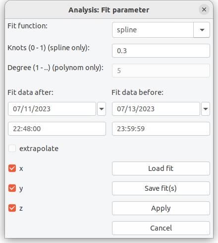
Figure 4.4.3: Fitting data dialog window.
The three methods Maxima, Minima and Mean will open an information dialog with the requested values. In case of mean also the standard deviation of these values for the shown data within the plotting window. You can change the active window using the plots’ zoom method.
Filter will allow you apply typically geomagnetically recommended filters and also some others to your time series. Principally, filtering is a combination of smoothing using a certain smoothing window e.g. gaussian and a resampling of the smoothed time series at new intervals. The default filter parameters will be given in dependency to the sampling resolution of the time series and will correspond to IAGA/INTERMAGNET recommended filter parameters. The filter dialog allows you to select an appropriate filter window. Detailed descriptions of all possible filter windows can be found elsewhere e.g. python signal analysis. You further define a window length, a sampling interval in seconds and eventually an offset for the window center. 0.0 as shown above will center the window on the second/minute/hour. Furthermore you have to select a preferred missing data treatment. By default, the IAGA recommended method will be used, which means that filtering will be performed if more than 90% of data is available within the filtering window. Interpolation will interplolate mssing data if more then 90% of data is available before filtering. Conservative will not calculate a filtered value if any data is missing. Please note: filter weights are always determined analytically and therefore missing data is correctly accounted for when applying the filter window.
Offset allows you to define a certain offset in time or component for either the whole time series or the selected (zoomed) time window.
Smooth data sets support the same smoothing windows as the filter method. In principle smoothing does exactly the same as the filter method without resampling the data set a new time stamps. Please check the filter function for supported methods.
Resample method can be used to subsample a time series at specific periodic intervals. If no measurements are available at the specific time stamp, than a linear extrapolation between surrounding points is used.
Delta F is available if vector components (x,y,z) and an independent f column is present within the active data set. When clicking on delta F, the vector sum (F[Vector]) is determined and subtracted from f (F[Scalar]). Delta F = F[Vector] - F[Scalar]
Calculate F will calculate the vector sum of x,y,z components and store the result within the reserved f column of the data object. If an independent f is already existing within this column, you will be asked whether you want to overwrite the existing information.
Activity will calculate the geomagnetic activity index k from the provided time series using the [FMI] method. The activity button is only active if geomagnetic components covering at least 3 days are available. Currently, the k index is solely calculated with the FMI method. Depending on the provided data eventually additional steps are automatically performed. The FMI method basically works with minute data resolution. If you have second resolution data, the filtering process is automatically performed using IAGA recommended filter options before k calculation.
PSD calculates power spectral density based on matplotlibs PSD method. You can modify the psd parameters using plot options. Please refer to the matplotib manual regarding a description of the parameters. Defaults are NFFT = length of the data set, pad_to=NFFT, detrend='mean', and scale_by_frequency=True. Calculated PSD's will not be part of the memory. If you want to go back to the original time series, click on Main menu, Access memory, select the original plot and press Plot.
Baseline is only available if a DI data set has been opened previously, an adopted baseline has been fitted and is still present in the memory. When now opening a variation time series, which is covered by the time range of available basevalues, the baseline button gets enabled. When pressing the baseline button you can select the previously fitted adopted baseline or choose from several previously obtained fits. The different fits are identified by a unique ID. Associated fitting parameters are shown in the baseline dialog. for adopted baselines. You can also save and load specific baseline functions to files. By default, when adopting a baseline towards your data set, this function will not be applied directly but stored within the time series meta information. You can apply the adopted baseline be pressing on the now available button Baseline Correction on the analysis panel. Exporting the data set before correction as PYCDF will export the adopted baseline function along with the data meta info. This way, uncorrected and corrected data is not separated any more. Extensive details and a complete walkthrough with hands-on examples for this method is provided below. If you would like to apply baselines with single clicks, the go to the main menu, Options and use basic options. Here you can activate the direct application of baseline without extending the meta information first.
Spectrogram is disabled by default as this method is currently under development. Please use the backend methods for plotting spectrograms.
4.5 The DI panel
The DI panel provides all necessary functions and methods to calculate basevalues and DI timeseries from basic/residual DI fluxgate measurements.
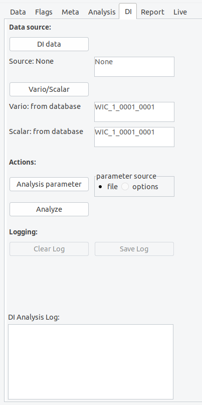
Figure 4.5.0: The DI panel.
The upper part of the DI panel is dedicated to the definition of data sources. Firstly you need to provide access to DI measurements data (DI data). Such DI data can either be located on your file system, within a MagPy database, or provided by a web service. Supported data formats can be found in the basic MagPy manual. When clicking on DI data, an input dialog will open asking you for a specific data source.
In order to regard for geomagnetic variation throughout the DI measurement and obtaining basevalues you further require variation data and measurements of F. Scalar F measurements can either be provided along with the DI data set, as usually the case if you measure F before or after the DI measurements at the same pier, or you can provide access to a continuously measured F using vario/scalar associated by a delta F value to consider pier differences. All MagPy supported data formats are also supported for this analysis.
Before analyzing the data set, you can modify/set analysis parameters. Such parameter include pier differences like delta F between continuously recording instruments and the DI pier, as well as threshold parameters etc. It is recommended to provide such parameters along with the meta information of the DI data. If you want to export baseline values in geographic XYZ coordinates please insert “XYZ” into the blvoutput field within the analysis parameter dialog. Please note: this will only work if the provided variation data is also from a XYZ oriented instruments and available in this coordinate system.
When finally using the Analyze button, which will be enabled if sufficient information is provided, a DI analysis will be performed. The results will be written to the logging window and can be saved as ASCII txt files by using the Save Log button. The plot panel will show the time series of resulting basevalues if available. By default the basevalues baseH, baseD and baseZ will be shown. An empty plot will be created if basevalues could not be calculated i.e. no vaild variometer data is available. D, I and eventually F however will be available even then und can be selected on the Data panel. Explanations for the shown results and other parameters like collimation angles, as well as further details on the DI-flux evaluation method used by MagPy are summarized in the general MagPy README.md on github, chapter 7.
Before starting a new analysis you might want to clear the report box by using the Clear Log button.
4.6 The report panel
The report panel will provide a summary of all analysis steps which have been performed so far. This report might be used for better transparency and the ability reproducing analysis routines. You can save the report messages as ASCII txt file by using the Save log button.
4.7 The monitor panel
Figure 4.7.0: The monitor panel.
The monitor panel gives you access to MagPy supported live data sources. Two data sources are supported. The first one is a MARTAS data acquisition unit which uses MQTT data transmission and it is strongly recommended to read the MARTAS manual first. You can add individual MARTAS stations to a favorite list, each characterized by a unique name. Just input the parameters for the new MARTAS connection and press Add to favorites. A window will open and ask you for a shortcut for the new MARTAS favorite. The input will only be stored permanently if you continue with Open. For MARTAS MQTT communication you need to know the access parameters of the machine. The address should be either the URL without https:// or the IP number of the station. If authentication is required please also insert user name and password, if not you need to leave username empty. The basic 'example' input in the MARTAS selection list cannot be removed. After selecting a MARTAS connection, the given address will be scanned for to specified scan time in order to detect MARTAS MQTT broadcasts. Meta information broadcasts are scanned which by MARTAS default are send only sporadically, mostly every 10 seconds. Please adjust the scan time accordingly if required. After scanning you will get a selection window of available sensors on the respective MARTAS. Select the one of your choice and start monitoring. If you want to record such data properly with some protection against sporadic disconnections you need to use the MARTAS package. For public usage, a test channel for MARTAS is available, providing access to real time data up to 10Hz resolution from a remote variometer station of the GeoSphere Austria. Please contact the Conrad Observatory, if you want to view this test channel.
The second data source is MARCOS, which is part of the MARTAS package and refers to a sql database collection system, thus using sql database queries on a real-time data base. Therefore the data content of the database has to be updated in real-time by any kind of uploading process. When connecting to MARCOS, the currently available database (see main menu -> Connect database) is scanned for real-time data tables. Select one of these tables and Start Monitoring to get visual live data.
When Stop monitoring is pressed, the currently shown data set is converted to a static data set and can be analyzed as all other data sets.
Real time access requires a proper installation of MARTAS/MARCOS. If you are interested in these features then checkout the MARTAS package on GitHUB.
5. Application recipies for geomagnetic observatory data analysis
5.1 Daily review of data and flagging
- Load a data set
- Identify disturbed data by (a) derivatives, (b) delta F
- Apply flags to the data set with different methods: Flag outliers for spikes, flag selection and ranges for individual
- Option1 - no database: Save flags separately in a file
- Alternative to option 1: save data as PYCDF which includes flagging info
- Option2 - database: Save flags in database
- When multiple people are flagging, please use "operator" fields. When using multiple sensors or using MagPy also for other data sets "groups" might be useful
It is recommended to use section 7.3 for training of these procedures.
5.2 DI analysis and adopted baselines
Here you will get a step by step example about analyzing DI measurement data, obtaining basevalues, getting adopted baselines and applying baseline corrections to variation data in order to produce adjusted, quasi-definitive and definitive data sets. For this recipe we will use example3.txt, example5.sec, as well as DI measurement data in example6a.txt and example6b.txt.
Lets start with the input sheet. In the Input sheet dialog we click on Open DI data and locate/open example6a.txt. Here you will have an example of a measurement using the residual method. It is recommended to use serial number for unique identification of theodolite and fluxgate. Also a self-defined revision number, for the theodolite might be useful to verify e.g. maintenance changes for fluxgate alignment and thus the collimation angles.
MagPy DI data files usually contain only measurements directly connected to the DI pier. Thus theodolite measurements are contained as well as F data prior to or after the directional measurements on the same pier. In order to analyze such data and to calculate absolute values of declination D and inclination I for a specific time we will need to consider magnetic field variations throughout the DI measurement period. For our example data we need both, a continuously recording variometer and also scalar data, as well as the pier differences between continuously recording instruments and the DI pier.
In order to analyze DI data files we now go to the DI panel, and firstly load DI data files into the memory by clicking on DI Data. You can get DI data from files of which MagPy Di files, AutoDIF abs data and USGS DI json structures are supported. If files are accessed, like example6a and example6b of the MagPy package (figure 5.2.0), source information will then show “file”. You will need to enter a station code "WIC" as this code is not contained in the example files.
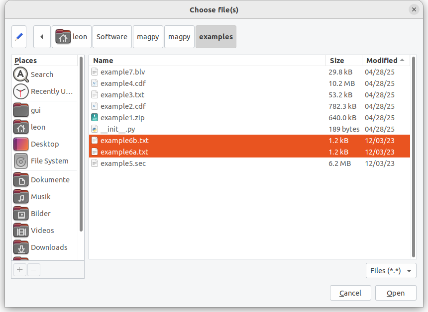
Figure 5.2.0: Loading example DI files for analysis.
Next, we will have to access variometer and scalar data for this time range. Such data is contained in example5.sec. You can also select a database as variometer and scaler data source, if connected. Please note that the DATAINFO table is essential for selecting such data and only variometer data containing XYZ or HEZ components are shown. Scalar data is limited to F or S notations. Finally you can also choose a webservice as data source.
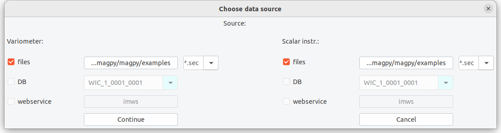
Figure 5.2.1: Selecting continuous variation and scalar data.
example5.sec contains variation data and independent F from the observatory. In order to consider the pier difference between F and DI pier one has to either to correct F data in advance using i.e. the offset method. Alternatively, you can also adopt F baselines when activating this within Options.
For our analysis the delta F values have already been considered in the F record and other deltas are negligible. We can directly use the Analyze button. This will result in a plot of D,I,F and basevalues as well as a detailed report on the results in the Analysis Log window of the DI panel (Figure 5.2.2).
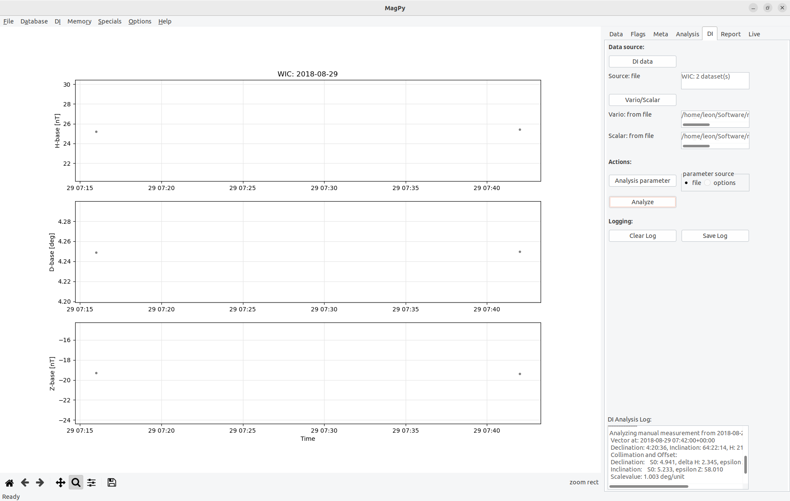
Figure 5.2.2: After DI analysis is finished, the screen will look similar as in this figure. You can change padding ranges in the graph using the plot options method of the Data panel.
Finally we export baseline and analysis data. The recommended export formats are either PYCDF or PYSTR as those will contain all analysis information and you can create i.e. INTERMAGNET IBVF files anytime later from them.
For our example we choose PYSTR as output format, modify name, coverage and path, and check the contents of the newly created file using a text editor of your choice. You will see that all analysis information is contained in this time series file. For further analysis we will now switch to example3.txt as this file contains such DI analysis data for one year.
When opening this data file you will find many individual DI measurements for one year (figure 5.2.3). All these measurements are performed at a single pier (“A2”) and for analysis we used the same variometer/scalar instruments, thus obtaining base values for these instruments. Please note that measurements from other piers are saved in separate files.
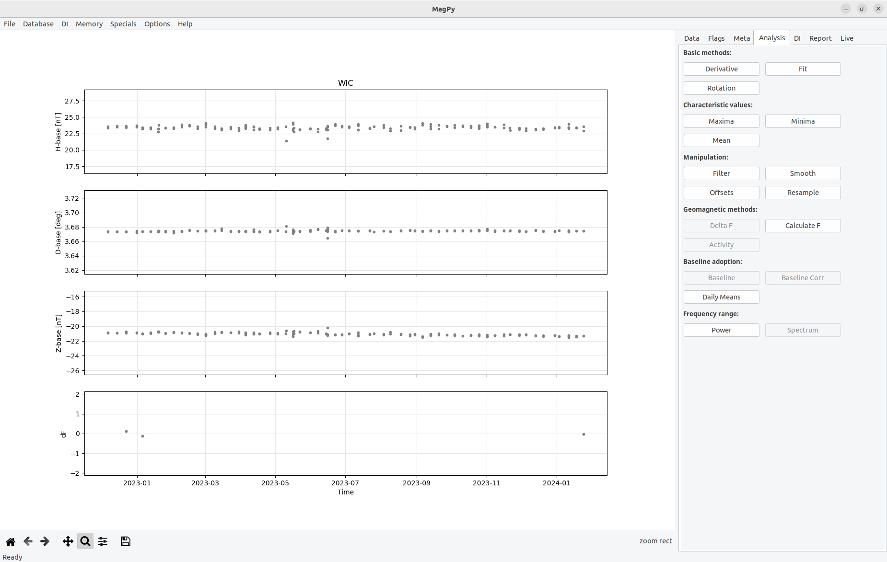
Figure 5.2.3: Basevalues for 2018 for pier A2 using a Lemi036 variometer and a GP20S3 potassium scalar magnetometer as reference. Only measurements of s specific theodolite are shown. The gaps in May and June are related to the usage of various other DI instruments in preparation of an IAGA workshop. Checkout the Conrad Observatory Yearbook 2018 for complete data.
Having the spot basevalues we can now continue with fitting an adopted baseline. It is obvious that a simple linear fit will do a good job here. Anyway, for demonstration purposes we will use two separate fits to describe the baseline.
In the fit dialog we add the first fit, a cubic spline. Then we add a second fit, a linear least-squares. Please note: by default the fitting function will always be restricted to the time range defined by the first and last data point within the selected sequence. If you want to fit the full time range as defined in the fitting dialog you need to enable extrapolation which is using the duplication method (see section 5.8 of the main manual). If you save and want to reload such extrapolated fitting functions please make sure to enable extrapolate before loading. Both fits will be shown in the plot (Figure 5.2.4) and also be automatically recognized as fits to basevalue data in MagPy’s memory.
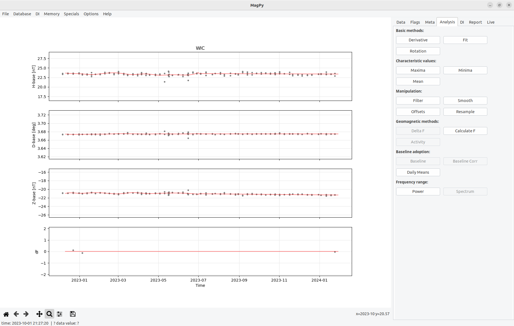
Figure 5.2.4: Adopted baseline with three different fits. A mean fit for df, cubic spline and linear least-squares for HDZ basevalues.
If you are satisfied with that you can save a BLV file. Please note that the file name will automatically be set with the correct year. Now we want to use the adopted baseline for baseline correction of the variation data. Therefore we load such variation data (example1.zip). After that you will find the button Baseline on the Analysis page enabled. Time to use it.
A dialog will open as shown in figure 6.2.6. This dialog will let you choose from different baseline data sets and their fitting options within the memory from the upper drop down box. You can also redefine an adopted baseline by using Change Fit. For our baseline we just use the latest (final) input in the drop down menu, telling us that this will use a linear-least square based on example3.txt contents for our data set.
Figure 5.2.5: Baseline adoption dialog.
After using Adopt baseline an information dialog will pop-up telling you that the baseline correction has been calculated. Its functional parameters are now contained in the meta information of the variation data set. Yet, the correction has not yet been performed. If you want you can now save your variation data set as an PYCDF archive which will store the functional parameters and, if available, also any flagging information currently connected with the data set. This way you can keep a single archive file which contains basically every data analysis step between raw data and definitive products.
[!IMPORTANT] Notes on XYZ basevalues: Please note that MagPy by defaults expects basevalues for HDZ (see example3). When applying these basevalues the D-base value is automatically converted to nT and applied to your variation data. Alternatively you can also use MaPy basevalue files with XYZ basevalues. In order to apply such data correctly, the column names need to contain the correct names, i.e. X-base, Y-base, Z-base instead of H-base, D-base and Z-base (as in example3.txt).
[!IMPORTANT] Notes on F basevalues: MagPy also support the adoption of F baseline. This needs to be activated in basic options however. If F base data is then available you can also fit such data and apply these fits as shown above.
5.3 Creating INTERMAGNET/IAGA filetypes
Example: You have baseline corrected variation data in 1 second resolution and continuous scalar data in 5 sec resolution. From this data sets you would like to create IMAGCDF files.
- open the scalar data set
- open the variation data set covering a similar time range
- go to memory and not the ID of the scalar data set
- go to data -> export data
- select IMAGCDF and open options
- there you can add the scalar data set by selecting its ID
6. Additional applications
to be added
7. Appendix
7.1 Known issues and bugs
Fitting: if fits are applied to a data set and afterwards the amount of shown columns is reduced or increased using the SelectColumns option on the Data panel then the fits are not shown any more. Only if the originally selected columns are selected again the fitting curves will be visible again. The reason is that plotting depends on lists of keys, and lists for symbols, colors, padding and functions, which all depend on the key list. Possible solutions: do not use lists but dictionaries. Well.... in a major future version.
7.2 Creating desktop links
7.2.1 Creating a desktop link for Linux
to be added
7.2.2 Creating a desktop link for MacOs
To execute a python program within a specific environment it is recommended to create a small startupscript i.e. named xmagpy:
#!/bin/bash
eval "$(conda shell.bash hook)"
conda activate magpy
xmagpyw
Make it executable e.g. by chmod 755 xmagpy. Open Finder and search for your script "xmagpy". Copy it to the desktop. To change the icon, click on the xmagpy link, open information and replace the image on the upper left with e.g. magpy128.jpg (also to be found using finder).
7.3 Testing procedure of the graphical user interface
Unlike the backend which come with two code testing features, runtime tests and verification tests, such tests are difficult to implement to cover issues with the graphical part. Runtime tests are used to check for general failures of individual modules. These tests are included into every module and can be run with "python module.py" (i.e. python stream.py). Such tests need to be performed whenever modules are modified to make sure that changes do not break up the overall functionality. Modules from magpy/gui are however not supported by such runtime tests. Same applies for verification tests ( magpy/tests/verification.py) which based on unittest ascertains that the tested methods perform as expected and return correct results. The underlying methods of XMagPy are tested thoroughly therefore, but nut the graphical applications. To check those the following test scheme is performed with every major release:
Linux environment:
- Open file example 1 (TODO replace by 2023 data set)
- Open file example 2
- Go to memory and access data set 1
- Flag panel: flag_outlier and assign group "magnetism"
- Zoom into one flag and show details
- Press right mousebutton to remove this flag
- Zoom in again and use Flag Selection with some "Geomagnetic Storm" flag, use group "magnetism" again
- Zoom into another part, use FlagRange -> time, no group
- Zoom into another part, use FlagRange -> value, selected values, add group "dummy"
- Flag minimum only in one component
- Flag maximum only in one component
- Save flags
- Clear flags
- Load flags and some drop flags with right click, modify with middle click
- Save flags and clear, reload and check, both with DB and file
- Open flag details and select only specific labels
- Select example 2 from memory and apply flags from file/DB
- Group flags will be shown
- open memory and select example1, clear flags
- Go to analysis page, calculate means and note mean for H/X
- Go to offset and subtract mean from column x
- data panel, select, only x column
- Open Webservice and load nearby observatory (i.e. BDV) for the same time range
- repeat 20-22 with this data set
- Options -> plot options -> replace color gray by blue
- Memory -> activate both data sets and Plot (nested)
- Memory -> activate both data sets and Plot, test zoom
- Memory -> clear memory
- Open webservice and test every possible option once
- Test URLs
- Clear memory
- Open example1
- Open statistics
- extract data points from example1
- drop and select columns
- load example2
- go back to example1
- export example1 in all possible format with provided options
- export as ImagCDF with scalar data from example2
- filter to minute and use those export options
- go to meta -> change i.e. SensorDescription and export to PYCDF
- reload the files and check
- clear memory
- database tests -> Database -> Connect DB
- Load data set from database
- Open example2 and go to meta
- Change SensorDescription and write to DB
- Test all analysis methods on example1 and use report panel to save report
- Test save and load methods for fit
- Run check data on a number of examples and save report
- Run marcos and martas monitoring with different data sources (TODO: test authentication)
- Baseline analysis: Load DI files from files and analyse, save report
- Load DI files and analyse with changed parameters
- Test various source for vario and scalar data
- Test various sources for DI data
- Fit adopted baselines
- Apply baselines to data, test load and save methods
- Test baseline adoptions with direct baseline (basic options)
- Test options menus
- Test the DI input menu including all submenus